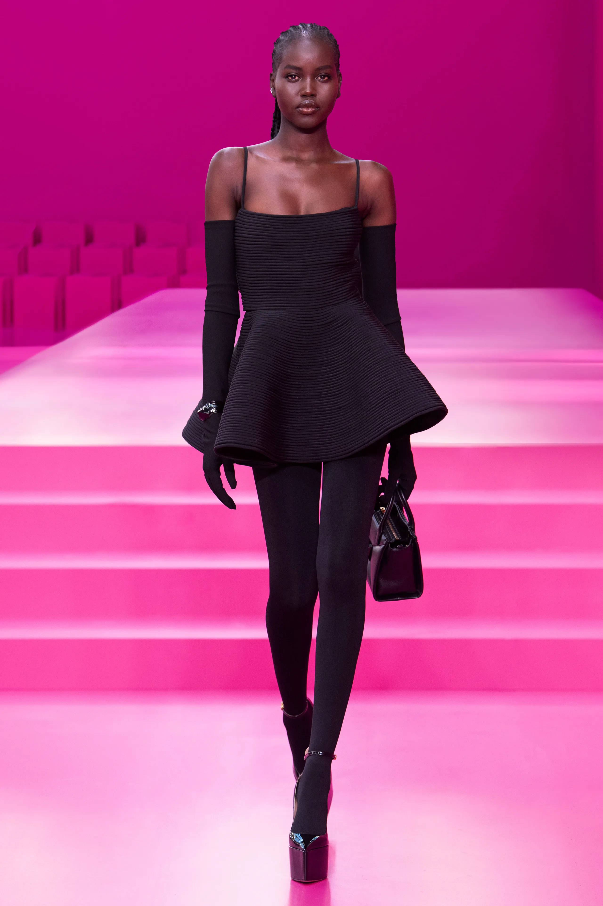
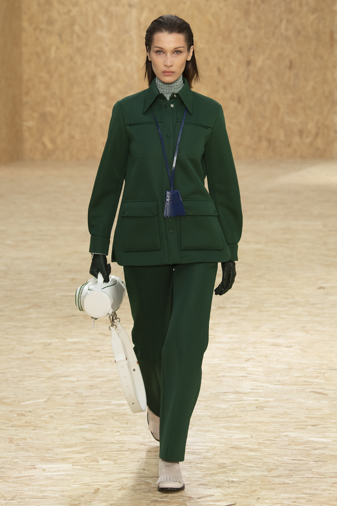
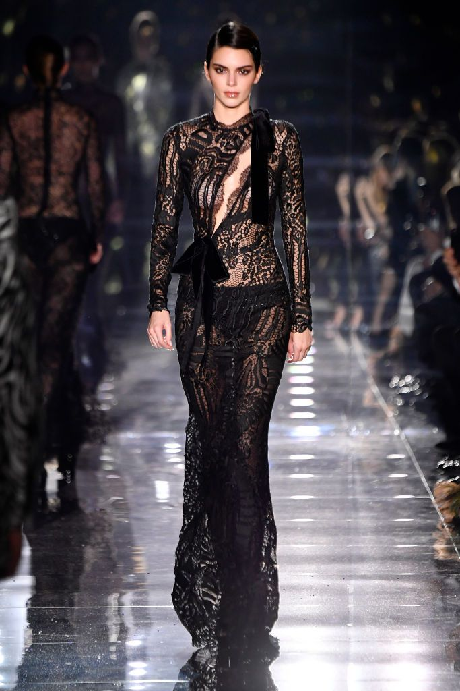

Clothes can be serious.

Chanel runway models are known for their elegance, poise, and grace as they walk down the catwalk in the iconic fashion house's latest collections. They often wear chic and sophisticated outfits, from classic tweed jackets to glamorous evening gowns, paired with stylish accessories such as hats, gloves, and jewelry. Chanel models are chosen for their striking features, unique style, and ability to embody the brand's aesthetic and vision. Their presence on the runway captures the attention of fashion enthusiasts worldwide and sets the tone for the upcoming trends in the fashion industry.

Dolce & Gabbana runway models exude confidence, sensuality, and glamour as they strut down the catwalk in the Italian fashion house's luxurious collections. They often wear bold and colorful ensembles, featuring intricate embellishments, lavish fabrics, and daring designs that celebrate femininity and self-expression. Dolce & Gabbana models are selected for their charisma, individuality, and ability to convey the brand's message of opulence and extravagance. They command attention with their fierce walks and captivating gazes, leaving a lasting impression on fashion enthusiasts worldwide.

Exteberria runway models are known for their edgy, avant-garde looks that push the boundaries of traditional fashion. They often wear asymmetrical designs, bold patterns, and experimental textures that challenge conventional aesthetics and showcase the brand's unique style. Exteberria models are selected for their ability to embody the brand's artistic vision and for their unconventional beauty and charisma. Their striking features and unconventional looks capture the attention of fashion enthusiasts who appreciate the brand's distinctive approach to fashion design. On the runway, Exteberria models exude a sense of daring and confidence, setting the tone for the brand's cutting-edge fashion statements.

Valentino runway models exude an air of romanticism, femininity, and sophistication as they walk down the catwalk in the iconic fashion house's exquisite collections. They often wear ethereal and delicate designs, featuring intricate lace, ruffles, and embellishments, that celebrate beauty and elegance. Valentino models are chosen for their classic beauty, poise, and grace, and for their ability to embody the brand's romantic aesthetic. Their presence on the runway evokes a sense of dreaminess and enchantment, captivating the hearts of fashion enthusiasts worldwide. Valentino models showcase the brand's signature style of modern luxury, and their walks are a true reflection of the brand's commitment to timeless elegance.

Lacoste runway models exude a sporty, fresh, and modern vibe as they strut down the catwalk in the French fashion house's collections. They often wear effortlessly chic and comfortable outfits, featuring the brand's iconic crocodile logo and signature polo shirts, paired with sleek sneakers and accessories. Lacoste models are selected for their natural beauty, athleticism, and confidence, and for their ability to embody the brand's youthful and dynamic spirit. Their walks exude energy and vitality, capturing the essence of the brand's active lifestyle aesthetic. Lacoste models are a true representation of the brand's commitment to effortless sophistication and casual elegance.

Maison Margiela runway models are known for their avant-garde and experimental looks that challenge conventional fashion norms. They often wear deconstructed and reconstructed designs, featuring unexpected fabrics, unconventional silhouettes, and unique textures that embody the brand's innovative and daring approach to fashion design. Maison Margiela models are selected for their individuality, nonconformity, and for their ability to embody the brand's unconventional aesthetic. Their walks are often slow and deliberate, showcasing the intricate details of the garments and accessories they wear. Maison Margiela models exude a sense of mystery and intrigue, captivating the attention of fashion enthusiasts who appreciate the brand's distinctive style.

MCM runway models exude a sense of luxury, sophistication, and glamour as they strut down the catwalk in the German fashion house's collections. They often wear bold and extravagant ensembles, featuring the brand's signature monogram print, exquisite leather, and hardware detailing that embody the brand's opulent aesthetic. MCM models are chosen for their striking features, confident presence, and for their ability to showcase the brand's commitment to modern luxury. Their walks exude power and confidence, commanding the attention of fashion enthusiasts worldwide. MCM models represent the brand's contemporary and cosmopolitan style, showcasing the intersection of fashion, art, and culture.

Rick Owens runway models exude an air of rebellion, individuality, and dark beauty as they walk down the catwalk in the American fashion designer's avant-garde collections. They often wear monochromatic ensembles, featuring asymmetrical silhouettes, unconventional cuts, and raw edges that embody the brand's gothic and grunge aesthetic. Rick Owens models are selected for their unconventional beauty, unique features, and for their ability to embody the brand's edgy and dark vision. Their walks are often slow and deliberate, showcasing the intricate details of the garments and accessories they wear. Rick Owens models exude a sense of otherworldliness and mystique, captivating the attention of fashion enthusiasts who appreciate the brand's distinctive style.

Tom Ford runway models exude a sense of glamour, sensuality, and sophistication as they strut down the catwalk in the American fashion designer's collections. They often wear sleek and elegant ensembles, featuring luxurious fabrics, sharp tailoring, and bold prints that embody the brand's contemporary and sexy aesthetic. Tom Ford models are chosen for their classic beauty, confidence, and charisma, and for their ability to embody the brand's vision of modern luxury. Their walks are often confident and assertive, commanding the attention of fashion enthusiasts worldwide. Tom Ford models represent the brand's commitment to timeless elegance and refinement, showcasing the intersection of fashion and luxury.
For Chanel, the models embody classic elegance and sophistication, wearing timeless designs that feature the brand's iconic tweed and quilted patterns. Dolce & Gabbana models exude sensuality and luxury, wearing vibrant and bold designs that showcase the brand's Italian heritage. Exteberria models are known for their edgy and avant-garde looks, wearing asymmetrical designs and bold patterns that push the boundaries of traditional fashion. Valentino models exude romance and femininity, wearing delicate and ethereal designs that celebrate beauty and elegance. Lacoste models represent a sporty and fresh vibe, wearing comfortable and chic outfits that showcase the brand's youthful and dynamic spirit. Maison Margiela models challenge conventional fashion norms, wearing experimental and deconstructed designs that embody the brand's innovative and daring approach to fashion. Tom Ford models embody glamour and sophistication, wearing sleek and sexy ensembles that represent the brand's vision of modern luxury. MCM models showcase opulence and extravagance, wearing bold and extravagant ensembles that feature the brand's signature monogram print, leather, and hardware detailing.